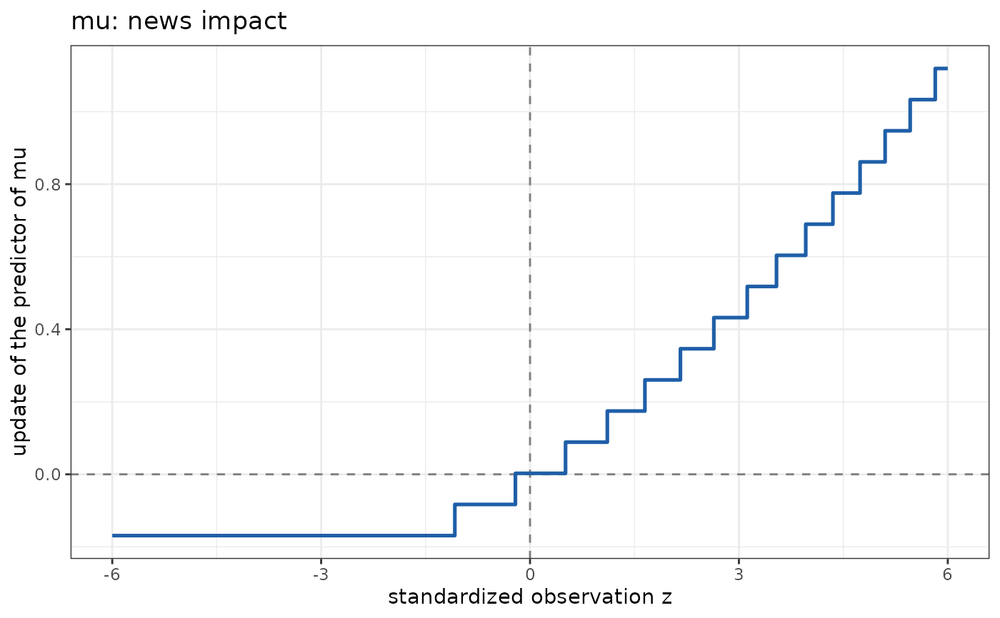

Selects the graph of the one-step update that a score-driven term
(modelterms7::gas()) applies to its predictor as a function of the
standardized observation: the loading of the first score lag times the
(scaled) score at the observation.
Usage
plot_news_impact(range = c(-6, 6), at = NULL, n_points = 401, legend = TRUE)Arguments
- range
A numeric vector of length 2, the range of \(z\).
- at
The row of the fitting data that supplies the parameters of the density, or
NULLfor the observation with the median filtered predictor.- n_points
The number of points of the grid of \(z\).
- legend
Whether to draw the legend that names the elements of the graph.
Value
A PlotNewsImpact object, inheriting from term_plot.
Details
The level of the filter is updated by \(\kappa_1 u_t\), where \(u_t = s_t \mathcal{I}_t^{-d}\) is the score \(s_t\) of the log-likelihood in the predictor, scaled by the expected information \(\mathcal{I}_t\) to the power \(d\) of the term, and \(\kappa_1\) is the loading of the first lag. The update depends on the observation and on the parameters of the density at which the score is read. To compare families on one axis, the observation is standardized through its distribution: for \(z\) on a grid, the observation is \(y(z) = F^{-1}(\Phi(z);\, \theta_\mathrm{ref})\), with \(F\) the distribution function of the family, \(\Phi\) the standard normal one and \(\theta_\mathrm{ref}\) the fitted parameters at a reference observation, so that \(z\) is the quantile residual of the observation. For a gaussian family \(z\) is the usual standardized residual.
The reference observation is at, or by default the observation whose
filtered predictor is the median of the series. For a discrete family
\(y(z)\) takes integer values and the graph is a step function. With
loadings for lags beyond the first (\(p > 1\)) the graph shows the
immediate update only.
A term whose parameters have subformulas has a loading that varies with the observation, a family whose response is a matrix has no quantile function on one axis, and both signal an error.
Examples
set.seed(4)
n <- 100
x <- rnorm(n)
f <- 0
y <- integer(n)
for (t in seq_len(n)) {
lam <- exp(0.7 + 0.3 * x[t] + f)
y[t] <- rpois(1, lam)
f <- 0.15 * (y[t] - lam) * lam^(-0.5) + 0.8 * f
}
dd <- data.frame(t = seq_len(n), x = x, y = y)
fit <- statmod(y ~ x + gas(p = 1, q = 1, time = t, scaling = 0.5),
distributions7::poisson_distrib(), dd)
ggplot2::autoplot(fit, term = "gas(p = 1, q = 1, time = t, scaling = 0.5)",
plot_type = plot_news_impact())
